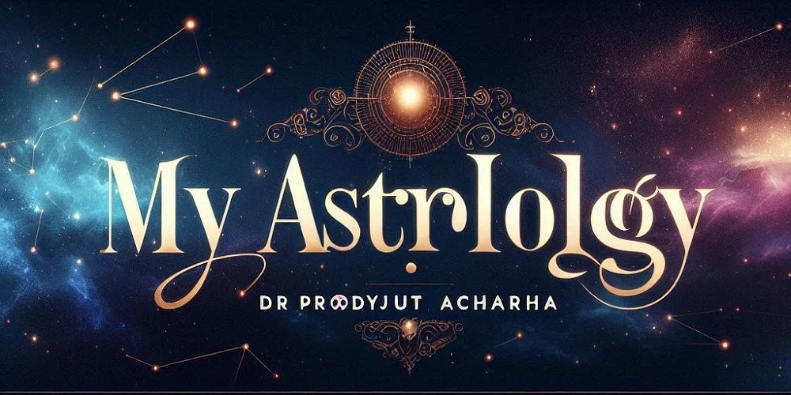
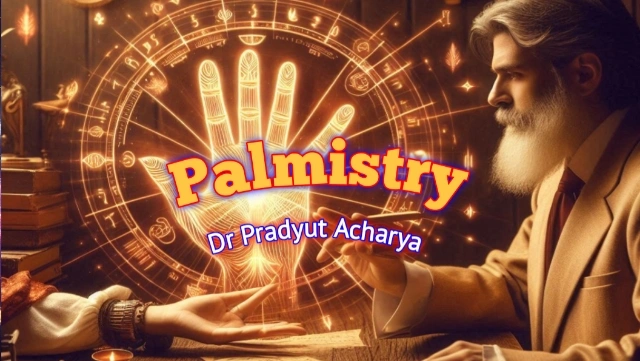
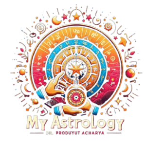
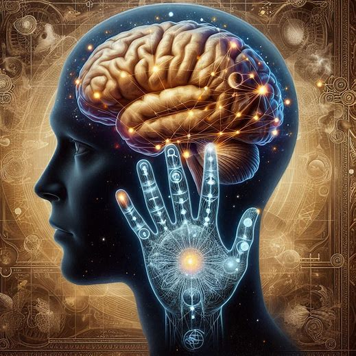
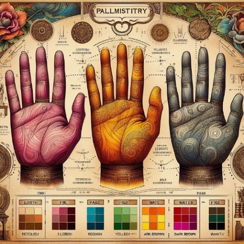
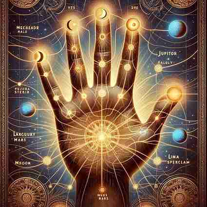
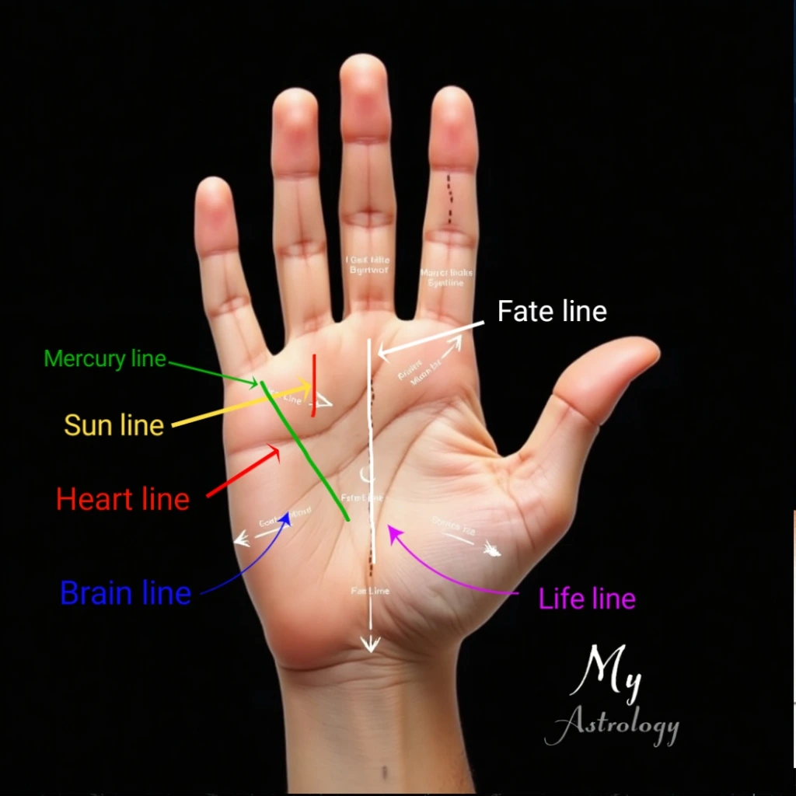

Discover your daily cosmic guidance — personalised insights for every zodiac sign
জানুন আজকের রাশিফল ও পঞ্জিকা →From the very first breath, humanity has sought the meaning and purpose of life — in the stars above, in the silence of temples, and in the sacred lines etched upon the palm. At MyAstrology, Ranaghat, West Bengal, we harmonise Astrology and Palmistry as complementary pillars of Jyotish Vidya — guiding seekers in matters of love, marriage, career, and life's true path. Some dismiss this sacred science as superstition; yet those who have received its guidance know that the hand is a living scripture.
The question echoes through every age — are the lines of the palm a genuine reflection of fate, or merely the random folds of skin? To seek a truthful answer, we must consult three eternal pillars: ancient scripture, spiritual philosophy, and the discoveries of modern science.
The Bhrigu Samhita and the Varahi Samhita describe palm lines as precise indicators of planetary influence upon the human soul. The Yoga Sutras of Patanjali and the Upanishads remind us that the path to self-realisation begins with understanding one's own body, consciousness, and karmic imprint. In the tradition of Samudrik Shastra, every feature of the hand — its shape, colour, and lines — is a coded message from the cosmos to the individual soul.
Research by Penfield, Sperry, and Ramachandran has revealed a profound neurological correspondence between the hands and the brain — influencing emotions, thought patterns, and decision-making. This scientific evidence aligns beautifully with the ancient insight that palmistry, when practised with wisdom and devotion, is not merely fortune-telling but a scientific and spiritual exploration of human existence.
This is why palmistry transcends prediction. It is a harmonious confluence of scriptural tradition, spiritual philosophy, and scientific inquiry — offering deeper self-awareness and illuminating future possibilities with clarity, compassion, and purpose.

Have you ever observed — your hands are not merely instruments of action, but a profound medium through which the inner mind speaks its language? In Hasta Rekha Shastra, every line narrates the story of your life's journey, while modern neuroscience confirms that each finger directly stimulates a corresponding region of the brain. This is precisely why palm reading is far from superstition — it is a precise, living map connecting logic, emotion, and consciousness, which an experienced palmist and astrologer can interpret to illuminate your life path.
The human brain comprises two complementary hemispheres. The Left Hemisphere governs logic, analysis, and language — and controls the right hand. The Right Hemisphere governs emotion, creativity, and imagination — and controls the left hand. The Corpus Callosum is the sacred neural bridge uniting these two worlds. When one joins the palms in Anjali Mudra or adopts specific hand positions during meditation, logic and emotion unite — stilling the restless mind, clarifying decisions, and restoring the balance of inner energies.
| Finger / Mount | Brain Lobe | Jyotish / Palmistry Traits |
|---|---|---|
| Thumb / Mount of Venus | Frontal Lobe | Love, beauty, willpower, romance |
| Index / Mount of Jupiter | Parietal Lobe | Leadership, ambition, authority |
| Middle / Mount of Saturn | Temporal Lobe | Patience, karma, caution |
| Ring / Mount of Apollo (Sun) | Occipital Lobe | Creativity, fame, artistic vision |
| Little / Mount of Mercury | Prefrontal Cortex | Intelligence, communication, business acumen |
Ancient Jyotish texts such as the Bhrigu Samhita and Samudrik Shastra have always known what modern science is now confirming: that the hand is a living reflection of the mind, the soul, and the cosmos. When the wisdom of scripture and the clarity of neuroscience converge, palmistry becomes not a relic of the past but a timeless guide for the present age.

Ancient Indian Samudrik Shastra declares: "The hand is the reflection of karma, and its structure is the foundation of character." A skilled palmist always examines the shape, finger structure, and skin tone before delving into the lines themselves. This foundational branch of palm reading is known as cheirognomy — the evaluation of the hand's overall form and texture to reveal personality, health, and innate potential.
| Type | Classical Traits | Modern Psychological Profile |
|---|---|---|
| Earth Hand | Stability, hard work, patience | Practical, grounded, realistic |
| Air Hand | Imagination, intellect | Analytical, quick decision-maker |
| Fire Hand | Energy, leadership | Action-oriented, courageous |
| Water Hand | Sensitivity, intuition | Emotional, deeply empathetic |
| Colour | Traditional (Shastra) Meaning | Scientific Insight |
|---|---|---|
| Pink | Healthy, vibrant, auspicious | Healthy blood circulation |
| Pale / White | Weakness, instability | Low haemoglobin |
| Reddish | Vitality, passion, aggression | Elevated blood pressure or excitement |
| Yellowish | Bile imbalance, Pitta aggravation | Possible liver issues |
| Bluish | Sadness, Vata disturbance | Reduced oxygen levels |
| Dark Brown / Blackish | Karmic toil, life of hardship | Sun exposure or melanin pigmentation |
Soft hands reveal an emotional, artistic nature. Elastic hands indicate adaptability and diplomatic skill. Firm hands reflect determination and practical resolve.
According to Samudrik Shastra, Earth hands belong to the stable and devoted, Air hands to the philosophers, Fire hands to the fearless, and Water hands to the deeply feeling. As the Western palmist St. Germain observed, the colour and shape of the hand quietly signals forthcoming changes in one's destiny. Dermatoglyphics research confirms a direct link between hand patterns and genetic as well as neurological structures — a truth the sages always knew.

In Hasta Rekha Shastra, the story of a life is revealed not by lines alone, but by the shape and vitality of the fingers and the sacred mounts at their base. The ancient Bhṛgu Saṁhitā and Varāhī Saṁhitā teach that each mount is a symbolic seat of a planet — shaping human temperament, thought, and karmic action. Modern neuroscientists such as Penfield and Ramachandran have confirmed that each finger activates specific brain regions, governing decisions, emotions, and the exercise of will.
| Finger / Mount | Brain Area | Core Traits (Jyotish & Science) | Classical Sources |
|---|---|---|---|
| Venus (below thumb) | Frontal Lobe | Decision-making, love, attraction | Penfield, Bhṛgu Saṁhitā |
| Jupiter (below index) | Parietal Lobe | Leadership, ambition, spiritual aspiration | Varāhī Saṁhitā |
| Saturn (below middle) | Temporal Lobe | Patience, karma, responsibility | Penfield, Varāhī Saṁhitā |
| Apollo / Sun (below ring) | Occipital Lobe | Creativity, fame, artistic expression | Cheiro, St. Germain |
| Mercury (below little) | Prefrontal Cortex | Intellect, communication, business | Ramachandran |
| Luna / Moon (lower palm side) | Limbic System | Imagination, intuition, emotion | Patañjali Yoga Sutra |
| Mars (centre of palm) | Motor Cortex | Courage, strength, determination | Samudrika Shastra |
Each mount tells a sacred story — from Venus's warmth and creative ardour to Mercury's keen wit and business vision. Elevated mounts indicate strength in those planetary qualities, while flat or underdeveloped ones may reveal areas of challenge and growth. A prominent Jupiter mount, for instance, denotes strong leadership and spiritual vision; an over-raised Saturn mount may reflect a tendency toward solitude and inner caution.
Luna's elevation signals a rich poetic imagination, and the prominence of Mars reflects fearless determination in the face of adversity. By combining the classical wisdom of hasta rekha with the precision of neuroscience, palm analysis becomes a bridge between sacred tradition and modern understanding — guiding self-awareness and illuminating life's choices.

In palm analysis, the six principal lines — Life, Heart, Head, Fate, Sun, and Mercury — each carry profound symbolic, spiritual, and neurological significance. Ancient scriptures such as the Bhrigu Samhita unite with the subtle principles of Kundalini Shakti, while contemporary research (Holzheime Study) reveals remarkable correlations between line clarity and psychological or physiological states.
When interpreted through both traditional Jyotish wisdom and modern scientific understanding, these six lines transcend mere physical markings — they form a living life-map guiding health, relationships, career, and spiritual evolution. Explore video insights on hasta rekha for practical, visual guidance.
In the study of hasta rekha, the palm is far more than a map of lines — it holds a secret symbolic language understood by the initiated. References from G. R. S. Mead ("Palmistry and the Elements"), St. Germain ("The Study of Chiromancy"), Indian Samudrik Shastra, and contemporary Chironomy research concur that these subtle signs reveal mental states, pivotal turning points of destiny, and even pathways of spiritual awakening. Each mark may be a silent prophecy — sometimes a divine blessing, sometimes a compassionate warning from the cosmos. You may read further on palm gesture meanings here.
| Sign | Meaning | Life Impact | Classical Sources |
|---|---|---|---|
| Cross | Tests & Challenges | Major turning points; forges stronger character | G. R. S. Mead, Samudrik Shastra |
| Fork | Change of Direction | Sudden shift in career, relationship, or residence | St. Germain, Chironomy |
| Island | Energy Depletion | Temporary weakening of health or finances | Chiromancy, Contemporary Journals |
| Grid | Confusion & Distraction | Instability, scattered energy, unfulfilled tasks | Contemporary Palmistry |
| Mounting Island | Obstacles & Pressure | Sustained long-term challenges in the area of that mount | St. Germain |
| Star ✦ | Sudden Auspicious Fortune | Unexpected opportunities, rise to fame | Samudrik Shastra |
| Triangle △ | Wisdom & Divine Protection | Scholarly gifts, research aptitude, spiritual growth | Chironomy |
As the Patanjali Yoga Sutra reveals, "External signs are the reflection of the inner mind." Auspicious marks such as the Star, Triangle, and Square indicate divine favour and protection, while inauspicious ones such as the Grid, Island, or Mounting Island may signal stress and life challenges calling for attention. Both Samudrik Shastra and modern palm analysis affirm that, with appropriate astrological remedies, gemstones, lifestyle adjustment, and inner balance, these planetary influences can be significantly softened and redirected. Explore detailed video guidance here.
When people lose their way, they often turn to the stars, to the quiet flame of a temple lamp, or to the lines upon their palms — seeking meaning, clarity, and hope. For me, Hasta Rekha Shastra (palm analysis), Vedic Jyotish, and Samudrik hand-line interpretation are not merely instruments of prediction. They are sacred mirrors of the soul — revealing who you truly are, where your path is leading, and which direction will guide you toward peace, prosperity, and lasting fulfilment.